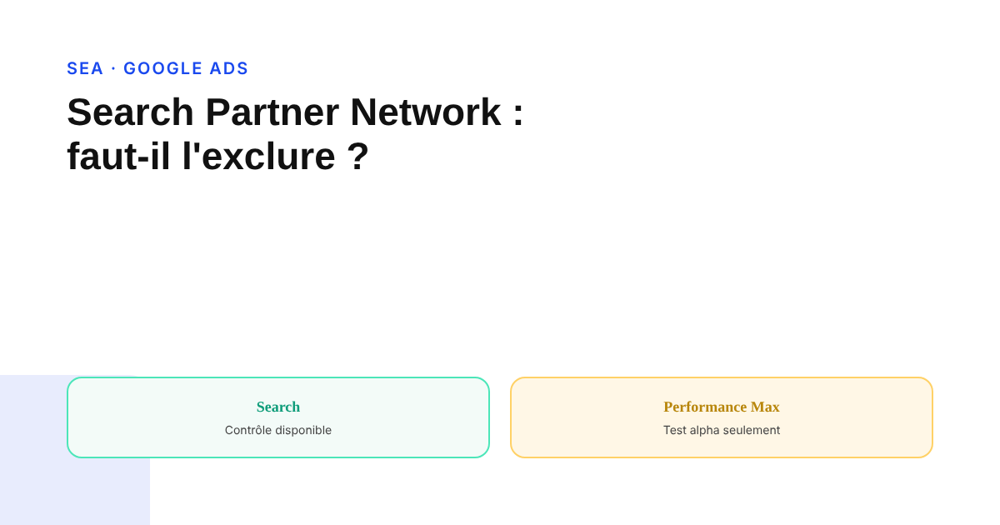
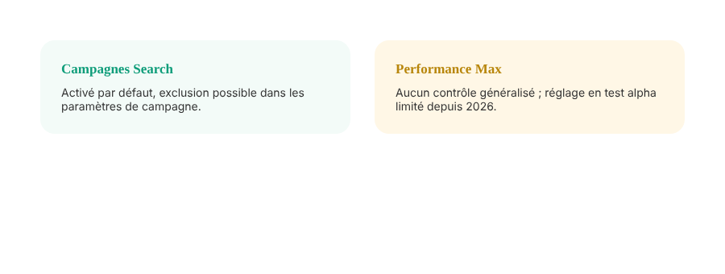

Search Partner Network : faut-il l'exclure de vos campagnes Google Ads ?
Beaucoup d'annonceurs savent qu'il existe, peu savent vraiment ce qu'il couvre ni s'ils peuvent le désactiver selon le type de campagne. Le contrôle disponible n'est pas le même sur Search et sur Performance Max — et ça fait une vraie différence.

Le Search Partner Network diffuse les annonces Google Ads sur un ensemble de sites et plateformes partenaires qui proposent leur propre fonction de recherche, en plus de Google Search lui-même. La plupart des annonceurs savent que la case existe dans les paramètres de campagne. Beaucoup moins savent qu'elle ne se contrôle pas de la même façon selon le type de campagne utilisé.
Sur Search classique : un contrôle simple, qui existe depuis longtemps
Sur une campagne Search traditionnelle, le Search Partner Network est activé par défaut, mais reste désactivable d'un clic dans les paramètres de la campagne, séparément du Réseau Display. C'est documenté et stable : aucune ambiguïté sur ce point pour ce type de campagne.
Sur Performance Max : longtemps aucun contrôle, un test en cours
La situation a longtemps été différente sur Performance Max : aucune option n'existait pour exclure spécifiquement le Search Partner Network, l'algorithme répartissant le budget sur l'ensemble des inventaires sans distinction accessible à l'annonceur. Google teste désormais, en version alpha limitée à certains comptes, un réglage séparant les cases Search Partner et Display — sans calendrier de généralisation annoncé à ce stade. Pour la grande majorité des annonceurs PMax, le contrôle reste donc encore indisponible aujourd'hui.

Ce qu'on ne peut pas vérifier facilement
Il n'existe pas de comparaison publique fiable sur la qualité du trafic issu du Search Partner Network par rapport à une recherche Google directe : pas de méthodologie indépendante, pas d'étude tierce consolidée. Ce qui est vérifiable, en revanche, c'est la performance observée dans son propre compte quand un rapport de répartition par réseau est disponible pour le type de campagne concerné — c'est cette donnée interne, et non une règle générale, qui doit guider la décision d'exclure ou non.
La limite qui ne change pas : pas de liste nominative
Contrairement au Réseau Display, où chaque site peut être exclu individuellement, Google ne publie pas la liste des sites partenaires du Search Partner Network. Le contrôle reste binaire : on inclut ou on exclut l'ensemble du réseau au niveau de la campagne, sans granularité site par site possible.
Comment décider en pratique
Sur une campagne Search où le réglage est disponible, comparer le volume et le coût par conversion entre Google Search et Search Partners sur une période suffisante avant de trancher : une sous-performance nette et confirmée justifie l'exclusion, un volume marginal sans écart de performance ne la justifie pas forcément. Sur Performance Max, en l'absence de contrôle généralisé, la vigilance porte surtout sur le suivi des conversions et la qualité des leads, pas sur un réglage qui n'est pas encore accessible à la plupart des comptes.
FAQ
Le Search Partner Network est-il activé par défaut sur Google Ads ?
Oui, sur les campagnes Search classiques, il est activé par défaut, avec un réglage d'exclusion disponible au niveau de chaque campagne dans les paramètres. Sur Performance Max, le contrôle a longtemps été inexistant ; un réglage spécifique est en test limité (alpha) chez certains annonceurs depuis 2026, sans date de généralisation annoncée.
Faut-il systématiquement exclure le Search Partner Network ?
Il n'existe pas de données comparatives fiables et publiques sur la qualité du trafic Search Partner par rapport à la recherche Google directe. La décision doit donc se baser sur la performance observée dans son propre compte (rapport par réseau, quand disponible) plutôt que sur une règle générale valable pour tous les comptes.
Peut-on exclure certains partenaires précis plutôt que tout le réseau ?
Google ne publie pas la liste nominative des sites du Search Partner Network, ce qui empêche une exclusion site par site comme on peut le faire sur le Display. Le contrôle reste binaire : inclure ou exclure l'ensemble du réseau au niveau de la campagne.
Envie d'un audit complet de la diffusion réelle de vos campagnes Google Ads ?
Pour aller plus loin, voir la page SEA, et l'article Reprendre la main sur la boîte noire de Performance Max.
Pour continuer sur ce sujet.